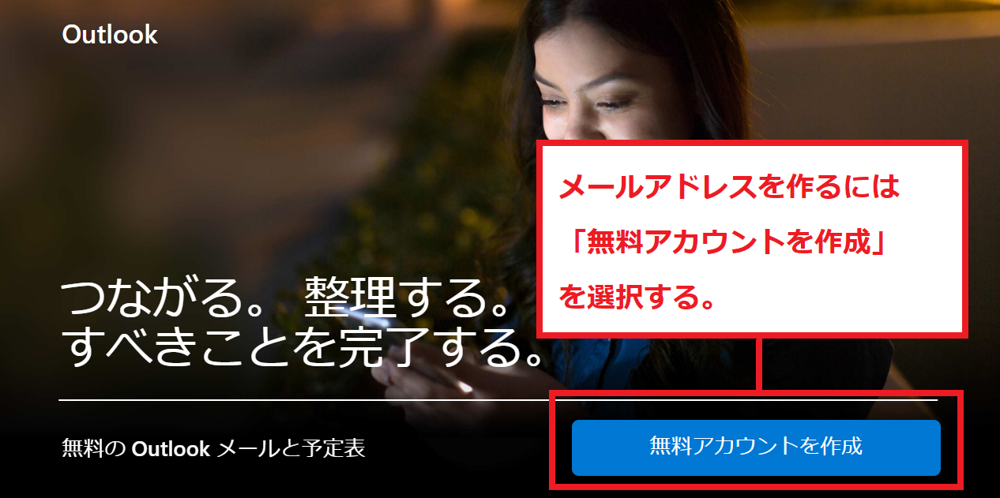

Windowsは、これまで様々なメーラーやメールサービスを導入してきました。
Windows10/11の現在でパソコンに搭載されているのは「Outlook」「メール（アプリ）」の2種類になっています （ただしOutlookは、Officeソフトを有料購入した場合だけ搭載）
そして、フリーメールである「Outlookメール」のサービスも提供しています。
このページではメールアプリ、インストール版Outlook、フリーメール版Outlookメールの3種類のメールサービスについて、それぞれの特長と違いについて解説をしていきます。
記事作成：2021年9月11日
まずはWindows10/11に標準搭載されているメール（アプリ）について解説をします。
私が持っているWindows10でもメニューを開くと下記のように「メール」と表記されているアイコンが表示されます。 当初Outlookと同じメールソフトなのかと勘違いしていましたが、これはOutlookとは別のメールソフトになります。
こちらは「メール」又は「メールアプリ」と呼ばれるメールソフトになります。
このメールアプリではメールをフォルダに分けるという「メールの振分け」が出来ません。 本来、メーラーに備わっている機能が制限されていて、簡易メーラーの位置づけになっています。
どんなメールが来ているのかなど、確認用に向いているメーラーだと言えるでしょう。
OutlookはWindows10/11に搭載されているメールソフトになります。 ただし購入時にOutlookがインストールされているのは、Officeを購入して付けた場合のみになります。
メールアプリとは異なり、フォルダへの振分け機能など様々な設定が可能になっている標準的なメーラーになります。
の現在、パソコンにインストール版のOutlookを入れたい場合は「Office2021」の購入が必要になります。
もしくはOutlook単体でも購入できます。単体購入の場合は「Outlook2021」を探しましょう。
「Ofiice2021」や「Outlook2021」は、家電量販店、AMAZONなどのECサイト、Microsoftストアで購入することが出来ます。 提供されているプランが5種類ぐらいあるので、Outlookが入っているOfficパックを購入しましょう。
→Outlook2021（単体）ページはこちら（Amazon）
Outlookメールはインストール型のOutlookと違い、無料でメールアドレスが作れるフリーメールのサービスになっています。 インストール版のアウトルックとはまったく別のサービスになります。
フリーメールは誰でも簡単にアカウントを作れます。そのため、次のページからOutlookメールの無料アカウントを作れば、その時点でメールアドレスが付与されて メールが出来ます。
Outlookメールはインストール版のOutlookのように、ソフトを起動させてメールをするタイプのサービスではありません。
Outlookメールは「Gmail」と同様のサービスだと考えてください。
ブラウザやアプリからOutlookメールのWebページに入り、管理画面にログインすることでメールを行います。
パスワードとIDを入れれば、すぐにメールができる仕組みになっています。

基本的にOutlookメールでは「***@outlook.jp」といったメールアドレスが無料でもらってメールをするサービスになります。
それ以外のメールアドレスも設定したい場合は、有償版であるMicrosoft365へプランをグレードアップすることで設定できるようになります。 無料版のままでは独自ドメインで作ったメールアドレスは登録できません。
Outlookメールのデータ容量は15GBまで付与されます。 その他にもアカウントを作ることによって、簡易版Word、簡易版Excel、Oneドライブといったオンラインストレージまで一緒についてきます。
現状ではインストール版Outlookの使用率は減ってきています。 その変わりに「Outlookメール」や「Gmail」といったフリーメールの利用者が多くなっています。
Microsoftもフリーメールサービスである「Outlookメール」の普及を進めているため、Microsoftオンラインなどのショップに入っても インストール版「Office2021」はとても探しずらくなっています。
現状では、サービス内容からしてもフリーメール版Outlookメールが好まれています。
フォルダ作成、メール振分けができませんので、簡易的にメールアドレスをチェックしたい場合に適したメールソフトになります。
Windows10やwindows11を購入した際にOfiice2021などがプリインストールされているパソコンだった場合は、 既にOutlookが入っています（アカデミック版Officeなど一部OfficeにはOutlookは入っていません）。
「独自ドメインでメールをしたい」という場合はそのままインストール版Outlookに独自ドメインを設定すればメールをすることができます。
Webメール機能はありませんので、そのパソコン1台だけでの利用になりますが、それで問題がなければコストを抑えて 独自ドメインメールが出来ることになります。

demiglaze
Web制作を始めて約19年になります（HTML/css、Photoshop、Webマーケティング）。2005年から当サイトの運営を開始。 これまでに300個以上のドメインを取得、10社を超えるレンタルサーバーを利用してきました。